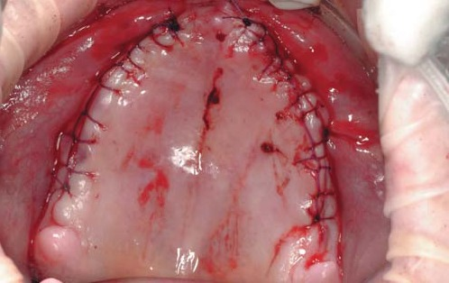
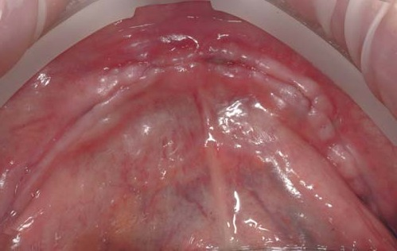
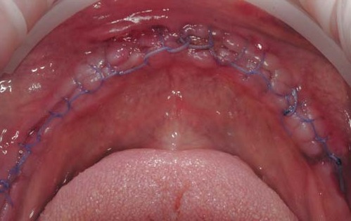
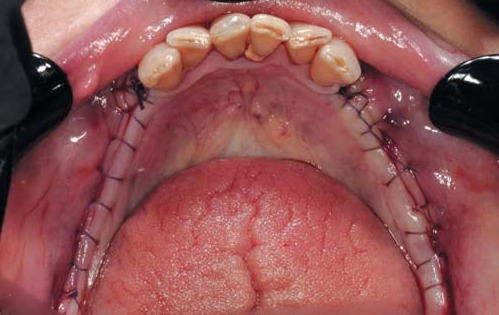
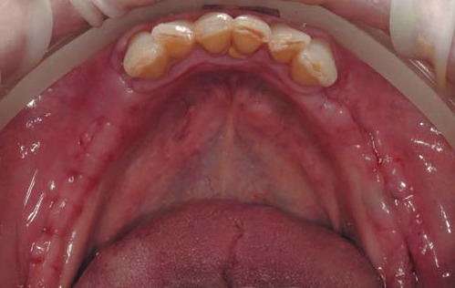
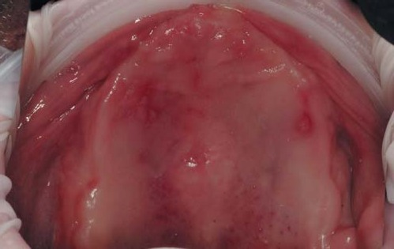

Хірургічна стоматологія · журнал «ДентАрт» 2024 №4
Шляхи запобігання ускладненням у хірургічній стоматології
THE WAYS TO PREVENT COMPLICATIONS IN SURGICAL DENTISTRY
Хірургічна стоматологія – один із напрямків ефективного відновлення функції зубощелепної системи.
Як при терапевтичному, ортопедичному, так і при хірургічному лікуванні ділянок ротової порожнини можливі ускладнення у вигляді запальних процесів слизової оболонки, окістя та кісткової тканини; абсцеси, флегмони, лімфаденіти, некроз, сепсис та навіть летальні випадки. Ускладнення також можуть бути спричинені різними супутніми хворобами, такими як цукровий діабет, онкологічні захворювання різних типів, патології крові та кровотворної системи, серцево-судинні захворювання, COVID-19 і навіть захворювання на ГРВІ.
Захворюваність пацієнтів на цукровий діабет в Україні має стійку тенденцію до зростання. За останні десять років, згідно з даними Діабетичного атласу-2021, смертність від хвороб, пов'язаних з високим вмістом цукру у крові, збільшилась у 2,5 раза, крім того, понад мільйон українців не знають про свій діагноз.
Важливо зазначити, що на кінець 2021 року в медичних установах та безпосередньо в онкологічних центрах на обліку з онкологічними захворюваннями стояли понад 1 мільйон 180 тисяч пацієнтів.
Відносно нова вірусна інфекція COVID-19 з періодичністю викликає спалахи інфікованості населення в Україні. Тільки в липні 2024 року зафіксовано понад 12 000 випадків захворюваності на коронавірус (порівняймо з 2000 інфікованих у червні 2024 року).
Причинами майже 65 % випадків смертності в Україні на 2024 рік залишаються серцево-судинні захворювання. Усе населення України живе в постійному стресі від повітряних тривог та обстрілів. Негативний нервово-психічний стан людей призводить до погіршення здоров'я і прямо впливає на підвищення захворюваності серцево-судинної системи, а також може бути однією з причин ускладнень під час і після хірургічного втручання.
Тому сьогодні є дуже актуальним запобігання ускладненням у хірургічній стоматології.
Ускладнення – вторинний патологічний стан хвороби, який виник внаслідок іншої хвороби або оперативного втручання, він також може бути викликаний уведенням певних препаратів. За видами ускладнення поділяють на постгастрорезекційні, гемотрансфузійні та післяопераційні.
Запобігання ускладненням або профілактика при хірургічному лікуванні – науково обґрунтовані заходи в медицині, спрямовані на зниження ризику розвитку відхилень у стані здоров'я людини, запобігання виникненню додаткових хвороб та зменшення тяжких наслідків під час та після хірургічного втручання, реабілітації пацієнта.
Профілактика, як і превентивна медицина, є пріоритетним напрямом трансформації системи охорони здоров'я в Україні та світі. На підставі цього в Україні створено мережу дитячих центрів профілактики, боротьби та лікування захворювань слизової оболонки ротової порожнини і пародонта тощо.
Це особливо актуально для пацієнтів із захворюваннями ротової порожнини, після складних хірургічних процедур або при лікуванні інфекцій.
Одним із перспективних напрямків є використання гомеопатичних препаратів. Торгова марка Heel уже багато років пропонує рішення для покращення якості лікування, зокрема у стоматології.
У цій статті розглянемо можливості використання та вплив деяких препаратів у профілактиці та лікуванні ускладнень після стоматологічних втручань.
Під час лікування ділянок ротової порожнини додатково використовуються допоміжні препарати для медикаментозної підтримки організму, проте нерідко у пацієнта виявляються ускладнення або патологічна реакція від самих допоміжних препаратів, негативний вплив на органи травлення, печінку, серце та інші системи організму.
Гомеопатичні препарати безпечні і м'які у застосуванні, що робить їх привабливими для стоматологів та щелепно-лицьових хірургів. Їх використання спрямоване на стимулювання власних захисних механізмів організму. Особливістю препаратів Heel є їх багатокомпонентний склад, що забезпечує комплексну дію на різні ланки патологічного процесу.
Препарати торгової марки Heel – комплексні гомеопатичні засоби, що складаються з багатьох компонентів природного походження. Їх дія базується на активації природних процесів організму, таких як імунна відповідь, регенерація та протизапальні механізми. Ключовим аспектом терапії є не пригнічення симптомів, як у випадку традиційних медикаментів, а стимулювання захисних механізмів організму, що дозволяє досягти стійкого результату з мінімальними побічними ефектами.
Застосування гомеопатичних препаратів у стоматології
Препарати торгової марки Heel широко використовуються для кількох цілей.
1. Протизапальна терапія. Після хірургічного втручання однією з причин безуспішного лікування та негативного результату є запалення. Після хірургічних втручань або при лікуванні захворювань пародонта потрібна медикаментозна підтримка організму, яка сприятиме зменшенню запального процесу. Одним із таких препаратів є Траумель С, який має виражені протизапальні властивості та прискорює регенерацію тканин.
2. Підтримка регенеративних процесів. Препарати Heel допомагають покращити процес загоєння ран, що особливо важливо після видалення зубів або складних хірургічних втручань.
3. Знеболення. Корегуючи запальний процес, Траумель С також ефективний у знеболюванні після операцій, знижуючи потребу в традиційних анальгетиках, що має менші побічні ефекти для пацієнта.
4. Запобігання інфекціям. Завдяки імунокорегуючій дії препарати Heel можуть знижувати ризик інфекційних ускладнень, що особливо актуально для пацієнтів з ослабленим імунітетом або при лікуванні запущених інфекцій ротової порожнини.
5. Запобігання ускладненням після стоматологічних втручань. Комплексні гомеопатичні препарати Heel успішно використовуються для профілактики таких поширених ускладнень, як післяопераційні набряки, запалення, альвеоліти та вторинні інфекції.
Деякі ключові препарати, що застосовуються у стоматології
1. Траумель С. Відомий препарат, що застосовується для зменшення запалення і прискорення загоєння після операцій та лікування захворювань пародонта. Він має виражену протизапальну, знеболюючу і регенеративну дію. Траумель С використовується у вигляді мазі або ін'єкцій для досягнення локального ефекту.
2. Лімфоміозот H. Препарат, який активує лімфодренаж та допомагає зменшити набряки. Він може застосовуватися для зменшення післяопераційного набряку, особливо після видалення зубів або хірургічних втручань у зоні ясен.
3. Мукоза композитум. Препарат має регенеруючу, імуномодулюючу, протизапальну, дезінтоксикаційну дію. Він сприяє процесу регенерації слизових оболонок організму, зокрема й ротової порожнини, тому може ефективно застосовуватись у стоматологічній практиці.
4. Ехінацея композитум С. Ефективний засіб для підтримки імунітету в боротьбі з інфекціями. Цей препарат завдяки імуномодулюючій, протизапальній та дезінтоксикаційній діям підвищує стійкість організму до інфекцій і сприяє швидшому одужанню пацієнтів.
5. Гепар комп. Хеель. Призначений для детоксикації організму та стимуляції відновлення тканин. Використовується у складних випадках, коли потрібне глибоке очищення організму від токсинів після інфекцій або травм.
Механізм дії препаратів Heel
Препарати Heel розроблені на основі гомеопатичних принципів і складаються з великої кількості компонентів природного походження. Їх терапевтична дія полягає в активації біологічних процесів організму, що дозволяє відновити функціональну активність тканин, зменшити запалення, стимулювати імунну відповідь та покращити регенерацію пошкоджених структур.
• Траумель С – комплексний гомеопатичний препарат з потужними протизапальними та регенеративними властивостями. Його дія полягає в стимулюванні макрофагів і фібробластів, що сприяє швидкому загоєнню тканин і зменшенню набряків. Препарат Траумель С має виражену протизапальну дію, що досягається шляхом інгібування синтезу медіаторів запалення, таких як інтерлейкіни (IL-1, IL-6), фактор некрозу пухлин (TNF-α) та простагландини. Крім того, Траумель С стимулює активність антиоксидантних ферментів, таких як супероксиддисмутаза, що знижує оксидативний стрес у тканинах.
• Лімфоміозот H – це комплексний гомеопатичний препарат, який використовується для покращення лімфодренажу. Основний механізм дії полягає у нормалізації роботи лімфатичних вузлів та активації бар'єрних функцій. Це сприяє виведенню зайвої рідини з тканин і покращенню міжклітинної взаємодії, особливо у поєднанні з імунною, нервовою та ендокринною системами, що прискорює загоєння. Крім того, він підтримує виведення токсинів з організму, що особливо важливо при лікуванні інфекційних ускладнень.
У стоматології ефективні результати дає застосування Лімфоміозот H у поєднанні з Траумель С. Це два комплексні гомеопатичні препарати, які мають позитивний вплив на імунну систему та запальні реакції, і їх поєднання відкриває нові перспективи у стоматологічній практиці.
Поєднання Лімфоміозот H та Траумель С може бути рекомендоване у таких випадках:
Гінгівіт і пародонтит – для зменшення запалення та болю.
Стоматит – для полегшення симптомів запалення слизової оболонки.
Післяопераційний період – для зменшення болю та прискорення загоєння.
Травми м'яких тканин ротової порожнини – для покращення регенерації та запобігання інфекціям.
Клінічні спостереження
Клінічні спостереження вели на базі двох окремо розташованих стоматологічних клінік, в одній клініці при прийомі пацієнтів використовували зазначені препарати, а в іншій призначали стандартну медикаментозну підтримку.
Вплив на запальні процеси
У спостереженні на 130 пацієнтах із запальними захворюваннями ясен було виявлено, що група, яка отримувала комбінацію Лімфоміозоту H і Траумель С, демонструвала значно швидше зменшення клінічних симптомів (біль, набряк, гіперемія) порівняно з контрольною групою, що отримувала традиційні нестероїдні протизапальні препарати (НПЗП). У середньому поліпшення стану відзначалося на 3–5 день лікування у 85 % пацієнтів з комбінованою терапією.
Післяопераційний період
В іншому клінічному спостереженні на 80 пацієнтах, які перенесли видалення зубів, порівняли ефективність комбінованої терапії з традиційними знеболювальними. Пацієнти, які отримували Лімфоміозот H і Траумель С, відзначали менший рівень болю (за шкалою ВАШ) та мали коротший період відновлення – у середньому на 2 дні швидше, ніж ті, хто приймав тільки НПЗП.
Результати клінічних спостережень підтверджують ефективність препаратів Heel у стоматології. Зокрема, використання Траумель С у пацієнтів після видалення зубів приводило до значного зменшення післяопераційного болю, набряку і запалення. Спостереження також показали, що використання Лімфоміозот H знижувало тривалість набряків, і це прискорювало процес реабілітації після складних хірургічних втручань.
У пацієнтів, які застосовували препарат, процес відновлення тканин відбувався швидше, а рівень дискомфорту був значно нижчим.
Пацієнти, що застосовували Лімфоміозот Н, поверталися до нормального життя в середньому на 2–3 дні швидше, ніж ті, хто не використовував препарат.
Спостереження, проведене на пацієнтах після видалення третіх молярів (зубів мудрості), засвідчило, що використання Траумель С значно знижує післяопераційний набряк та біль. Спостереження велося на 40 пацієнтах, які були розділені на дві групи: група, що отримувала стандартне лікування, і група, що отримувала додатково Траумель С у вигляді ін'єкцій та мазі.
Результати показали, що у пацієнтів з другої групи набряк зменшувався на 30 % швидше, а рівень болю був на 25 % нижчим порівняно з контрольною групою. Крім того, потреба у традиційних анальгетиках у групі Траумель С була знижена вдвічі.
У клінічному спостереженні з використанням Траумель С та Ехінацея композитум С для лікування пацієнтів з хронічним пародонтитом брали участь 30 пацієнтів.
Препарати застосовувалися разом зі стандартною терапією (механічне очищення та антибактеріальна терапія). Через 4 тижні було відзначено значне зниження рівня запалення ясен, покращення їх структури та зменшення глибини пародонтальних кишень. Крім того, пацієнти повідомляли про значне поліпшення загального самопочуття та зниження болю у порівнянні з тими, хто отримував тільки стандартне лікування.
У клінічному спостереженні, що включало 25 пацієнтів з діабетом 2 типу, які проходили лікування після хірургічного видалення зубів, група, що отримувала препарати Heel, мала на 40 % нижчу частоту інфекційних ускладнень та значно менший рівень післяопераційного набряку, ніж та, що не використовувала їх.
Наукові дані про використання препаратів Heel у стоматологічній практиці підтверджують їх високу ефективність у профілактиці та лікуванні різноманітних ускладнень. Розглянемо кілька клінічних випадків.
Клінічний випадок 1
Пацієнт Р., 69 років, звернувся для реабілітації функції зубощелепної системи шляхом встановлення дентальних імплантатів на верхній щелепі. Стоматолог-хірург виконав інсталяцію шести дентальних імплантатів на верхній щелепі, після накладання швів були зроблені ін'єкції комбінації Лімфоміозоту H і Траумель С у ділянку перехідної складки в проєкціях раніше проведеного оперативного втручання.



Клінічний випадок 2
Пацієнтка О., 63 роки, звернулася для реабілітації функції зубощелепної системи шляхом встановлення дентальних імплантатів на нижній щелепі. Стоматолог-хірург зробив видалення залишків інфікованих коренів, кістектомію, редукцію кісткової тканини, інсталяцію шести дентальних імплантатів, після накладання швів були виконані ін'єкції комбінації Лімфоміозоту H і Траумель С у ділянку перехідної складки в проєкціях раніше проведеного оперативного втручання.


Клінічний випадок 3
Пацієнтка Л., 56 років, звернулася для реабілітації функції зубощелепної системи шляхом встановлення дентальних імплантатів у ділянку відсутніх зубів. Стоматолог-хірург виконав інсталяцію дентальних імплантатів, після накладання швів були зроблені ін'єкції комбінації Лімфоміозоту H і Траумель С у ділянку перехідної складки справа та зліва в проєкціях раніше проведеного оперативного втручання.


Показання до застосування
Підсумовуємо. Комплексні гомеопатичні препарати Heel застосовуються у стоматологічній практиці для профілактики і лікування таких ускладнень:
1. Післяопераційний набряк і запалення. Одним із найбільш поширених ускладнень після видалення зубів або хірургічних втручань є післяопераційний набряк і запалення тканин. Препарат Траумель С сприяє зменшенню набряку завдяки своїм протизапальним і регенеративним властивостям. Спостереження свідчать, що застосування Траумель С після видалення зубів мудрості дозволяє зменшити набряк на 30-40 % у порівнянні з плацебо. Після видалення третіх молярів (зубів мудрості) використання Траумель С значно знижує післяопераційний набряк та біль.
2. Біль після хірургічних втручань. Використання Траумель С дозволяє зменшити потребу в традиційних анальгетиках, таких як нестероїдні протизапальні препарати (НПЗП), які можуть мати побічні ефекти. Траумель С забезпечує ефективне знеболення завдяки активації протизапальних процесів та зменшенню болю на локальному рівні.
3. Лікування пародонтиту. Препарати Heel також використовуються для терапії захворювань пародонта. Наприклад, Траумель С у поєднанні з традиційною терапією допомагає зменшити запалення, сприяє регенерації тканин ясен та знижує ризик ускладнень.
4. Лікування хронічного пародонтиту. Препарати застосовувалися разом зі стандартною терапією (механічне очищення та антибактеріальна терапія).
5. Профілактика післяопераційних ускладнень у хворих на діабет. Хворі на цукровий діабет мають підвищений ризик післяопераційних інфекційних ускладнень через порушену імунну відповідь. Використання Ехінацея композитум С та Лімфоміозоту H у комплексному лікуванні таких пацієнтів дозволяє значно знизити ризик розвитку інфекцій та набряків.
Стоматологія, будучи галуззю, де кожна операція має свої ризики і наслідки, потребує використання препаратів, що можуть знизити запалення, набряки та біль, а також запобігти інфекції. Комплексні гомеопатичні препарати Heel, зокрема Лімфоміозот H та Траумель С, демонструють високу ефективність у вирішенні цих завдань.
Протипоказання та побічні ефекти
Як і будь-які препарати, Лімфоміозот H і Траумель С мають протипоказання. Гомеопатичні засоби хоча й рідко викликають побічні ефекти, але можуть спричиняти алергічні реакції у людей, чутливих до компонентів, таких як арніка, календула чи інші рослинні екстракти. Застосування цих препаратів не рекомендується жінкам під час вагітності та грудного вигодовування дитини без попередньої консультації лікаря.
Висновки
Гомеопатичні препарати торгової марки Heel демонструють високу ефективність у профілактиці та лікуванні ускладнень у стоматологічній практиці. Їх багатокомпонентні формули впливають на ключові патогенетичні механізми запалення та болю.
Комбінація Лімфоміозот H і Траумель С у стоматологічній практиці демонструє високу ефективність у зменшенні запальних процесів, зниженні болю та пришвидшенні регенерації тканин після хірургічних втручань. Їх застосування може стати ефективною альтернативою традиційним методам лікування, особливо у випадках, коли пацієнти погано переносять нестероїдні протизапальні препарати або потребують додаткової імуностимуляції.
Використання комплексних гомеопатичних препаратів торгової марки Heel у стоматологічній практиці дає можливість значно знизити частоту післяопераційних ускладнень, таких як біль, набряки та інфекції. Такі препарати, як Траумель С та Лімфоміозот H, мають високу ефективність, мінімальні побічні ефекти та комплексну дію на організм пацієнта. Вони можуть використовуватися як для профілактики ускладнень, так і для лікування вже існуючих патологій, що робить їх ефективними інструментами у сучасній стоматології.
Подальші клінічні дослідження можуть розширити розуміння механізмів дії та оптимальних схем застосування цих препаратів у стоматології, але вже сьогодні їх поєднання демонструє обнадійливі результати в лікуванні запальних захворювань ротової порожнини.
Література
1. Müller R., Schneider C., & Klein P. (2001). Efficacy of a homeopathic combination preparation in upper respiratory tract infections: A randomized, double-blind, placebo-controlled clinical trial. Pharmacoepidemiology and Drug Safety, 10(4), 255–261.
2. Tröger W., et al. (2014). Homeopathic treatment of patients with chronic sinusitis: A prospective observational study with 8 years follow-up. Journal of Alternative and Complementary Medicine, 20(4), 286–293.
3. Бабинчук О. О. (2018). Гомеопатія в стоматології: досвід застосування препаратів Heel. Український стоматологічний журнал, 2(76), 22–26.
4. https://vue.gov.ua
5. diabetesatlas.com.ua
6. www.rada.gov.ua/print/241863.